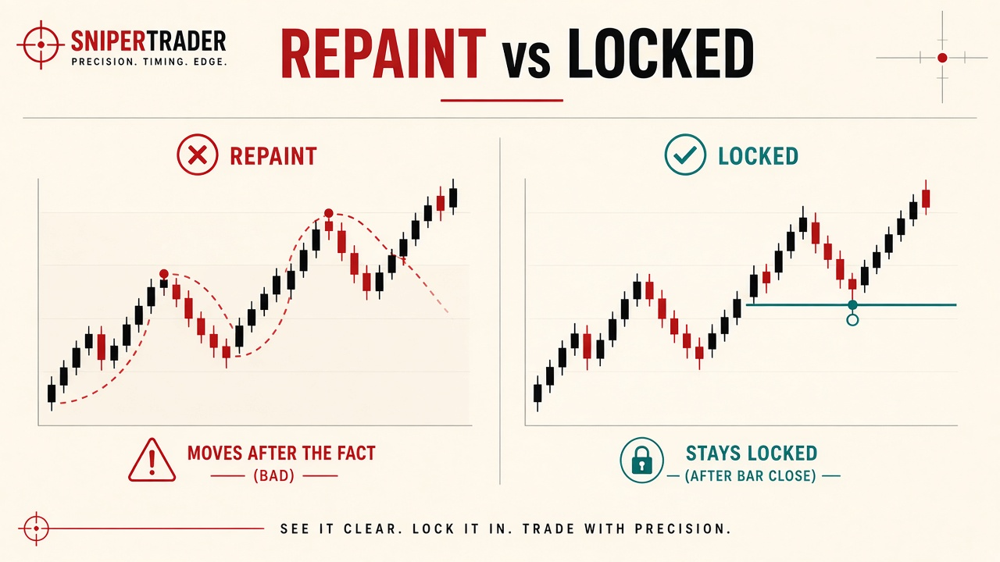
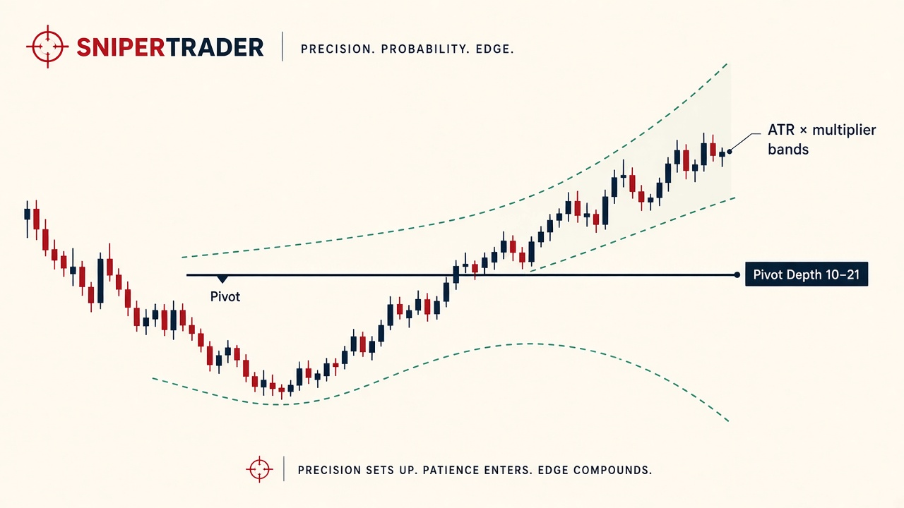
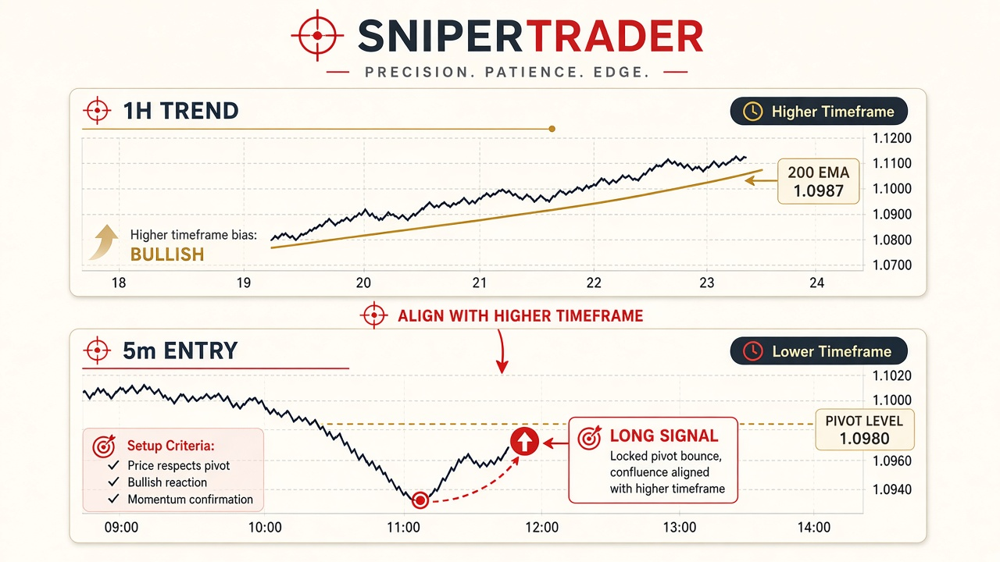
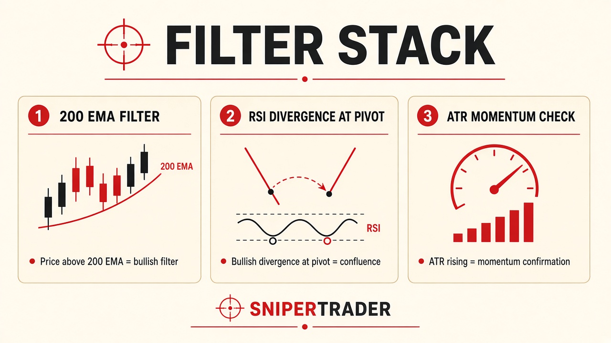
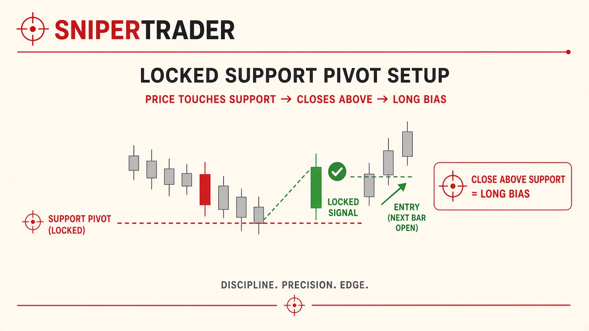
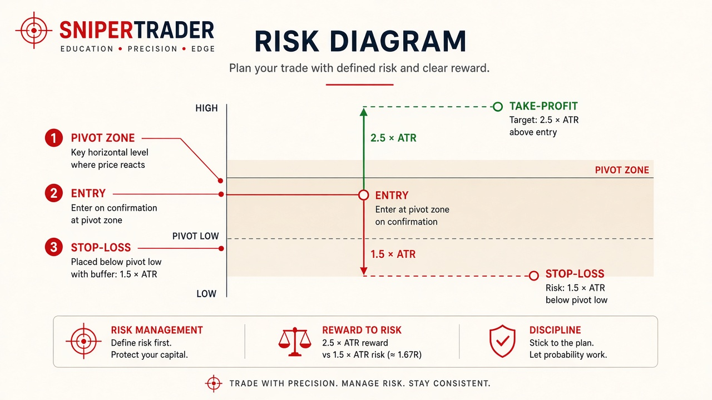

Learn to read it. In a weekend.
Anchor to fair value. Confirm the swing. Trade the trend. Non-repainting pivots, an anchored VWAP with three deviation bands, and a triple-EMA trend cloud — one clean read.
This page teaches the same four-step session used on the indicator. Short sentences. Each new word is explained once.
Fair value
VWAP + ±1σ / ±2σ / ±3σ bands. See if price is at value or stretched.
Trend
EMA 9 / 21 / 50 cloud with a 200 filter. BULL, BEAR, or RANGE.
Structure
Confirmed pivots. The arrow prints after the close — and stays.
A pivot is a swing high or swing low — a turning point.
A candle (or bar) is one block of price. When its time ends, it is closed.
A repaint is a marker that moves or vanishes. A locked marker stays put.
VWAP is the volume-weighted average price. It is a fair-value line.
From chart to decision. In four steps.
You do not need to know how the script is built. You need to know how to trade it. Same four steps, every session.
Anchor to fair value
Choose the VWAP start: confirmed swing, session, day, or week. The line and its three bands show whether price is at value or stretched away from it.
Read the trend cloud
Green means look for longs. Red means look for shorts. Grey means stand aside. Never take a setup against the cloud.
Confirm the swing
A swing high or low only prints after two right-side bars close. Once printed, it stays. No disappearing arrows. No quietly shifting stops.
Trade the band extremes
A close back through VWAP is impulse. A push through +3σ or −3σ is a stretched move. Each event fires its own alert on bar close.
Fair value, trend, and structure should agree before you risk a dollar. The alerts hand you the read. You still decide whether to act.
Non-repaint pivot mechanics.
Why repainting kills consistency — and how the left-lookback / right-confirm rule keeps a pivot static once it prints.
Repaint vs locked
Many pivot tools shift as new ticks arrive. The dot slides. The old signal disappears. That is a repaint. The chart looks perfect later. It did not look that way in real time.
A non-repaint pivot waits. The candle must finish. Only then can the marker appear. Once it appears, it does not move. It does not vanish.
If the candle is still open, the story can still change. Locked pivots confirm after the close. Wait until the candle finishes.

Lookback and confirm
The detector looks left, then waits on the right. A candidate swing high needs 5 bars of lower highs to its left and 2 confirmation bars to its right. The arrow prints at the true pivot bar — not where it was first suspected.
Default inputs: lookback 5, confirm 2. Change them only if your method demands it.
A wider swing on a higher timeframe can use a deeper search. The figure below shows a practical depth of about 10 for a 5-minute or 15-minute scalp, and about 21 for a 1-hour or 4-hour swing. Same idea: more bars on each side means a larger turn before the lock.
Anchored VWAP & deviation bands.
Pick the anchor. Then read ±1σ / ±2σ / ±3σ for value versus a stretched move.
VWAP is a volume-weighted average. Heavy volume pulls the line. Light volume does less. That is why it is used as institutional fair value.
Three bands sit around the line. The area between ±1σ and ±2σ is the value area. ±3σ is a statistical extreme — price is stretched.
Confirmed swing
VWAP restarts on every locked pivot. Bands track the current structural leg.
Session
Restarts on the session’s first bar. Follows the institutional window.
Day
Above day VWAP is intraday strength. Below is weakness.
Week
The longest anchor. Smooths daily noise for larger players.
Volatility also sets how far bands sit from a locked pivot. Quiet tape, tighter bands. Wild tape, wider bands. The illustration uses an ATR multiplier — Average True Range, a simple “how much does price usually move” number — to show that idea.

Triple EMA & trend cloud.
Use the 9 / 21 / 50 stack and the 200 filter to read BULL, BEAR, or RANGE before you pick a side.
An EMA is an exponential moving average — a smoothed line of recent prices. Fast numbers hug price. Slow numbers lag. The cloud sits between the fast and slow lines.
The cloud is green only when the fast EMA is above the slow and price is above the 200 EMA. Red is the mirror. Anything else is grey.
BULL ▲
EMA 9 > EMA 21 and close > EMA 200. Longs only. Reject shorts.
BEAR ▼
EMA 9 < EMA 21 and close < EMA 200. Shorts only. Reject longs.
RANGE ◈
Neither condition holds. Stand aside. The filter keeps you out.
The 200 EMA is also the first optional filter on a higher timeframe. Longs only above it. Shorts only below it. Align a 5-minute pivot with the 1-hour cloud. If they disagree, wait.

Optional extra checks sit on top of the cloud. They do not replace it.
| Filter | How it helps |
|---|---|
| 200 EMA | Longs only above. Shorts only below. Same rule as the cloud’s trend gate. |
| RSI / Stochastic | These are 0–100 stretch meters. Divergence at a locked pivot is confluence — two reasons to care. |
| ATR | Trail a stop as the trade works. Rising ATR on a band break means the move has energy. |

Reading swing structure.
Higher-high / lower-low sequences, and break-and-retest setups built on static pivots.
Support is a locked low — buyers held there. Resistance is a locked high — sellers held there.
Bullish: price touches locked support, then the candle closes above it. That is a long bias — you only look to buy, and only if the cloud is BULL.
Bearish: price touches locked resistance, then the candle closes below it. Short bias. Cloud must be BEAR.
After the bar closes, check the label. It should stay locked. If it slides or vanishes, it was never locked.

Filter fakeouts
A fakeout looks like a signal, then fails. Mid-bar, price can poke a pivot and snap back. That poke is not a vote.
Closed-candle rule only. If the signal disappears before the close, skip it. That was a repaint-style trap. No lock, no trade.
Alerts & execution.
Six bar-close conditions. Stop beyond a confirmed pivot. Targets at the band extremes.
Every alert fires once per bar close. Never mid-candle. What you hear is what you see.
| Condition | Fires when |
|---|---|
| Confirmed Swing HIGH | Two right-side bars close and the alternating-structure rule accepts it. |
| Confirmed Swing LOW | Same rule on a swing low. |
| Close crossed ABOVE VWAP | Price finishes up through value — below value to above value. |
| Close crossed BELOW VWAP | Price finishes down through value. |
| Close crossed ABOVE +3σ | A statistically stretched move above the upper band. |
| Close crossed BELOW −3σ | A statistically stretched move below the lower band. |
There is no mid-candle signal. No bubble that disappears after it prints. If it is not locked at the close, there is no setup.
Plan the trade
The signal bar is the candle that closed with a confirmed event. Enter on the next bar open.
A stop-loss sits beyond the confirmed pivot — far enough that normal noise does not take you out. A simple frame: 1.5 × ATR beyond the pivot low (longs) or pivot high (shorts).
A take-profit sits at the next band extreme or the next major pivot. A simple frame: 2.5 × ATR from entry, or the ±3σ band.

Cheat sheets & checklist.
A desk list for every session. Work it on replay first. Tick a box when the step feels slow and boring. That is the point.
Calm. Precise. Deliberate.
- Repaint markers move. Locked pivots print after two right-side bars close — and stay.
- Four steps: anchor VWAP, read the cloud, confirm the swing, trade the band extremes.
- Green cloud = longs only. Red = shorts only. Grey = stand aside.
- Six alerts, all bar-close. Enter the next open. Stop beyond the pivot. Target ±3σ or 2.5 × ATR.
- Higher timeframe first. Filters are extra checks, not a new system.
Practice on replay. Protect capital first.
Replay the four steps until they feel automatic. Education only. You are responsible for your own decisions.
This page is for education only. It is not financial advice. Markets involve risk of loss. Examples here do not predict future results.